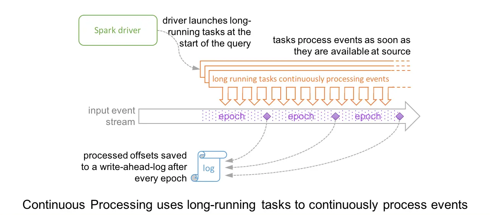
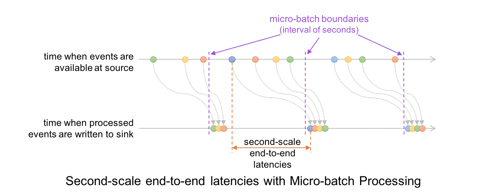
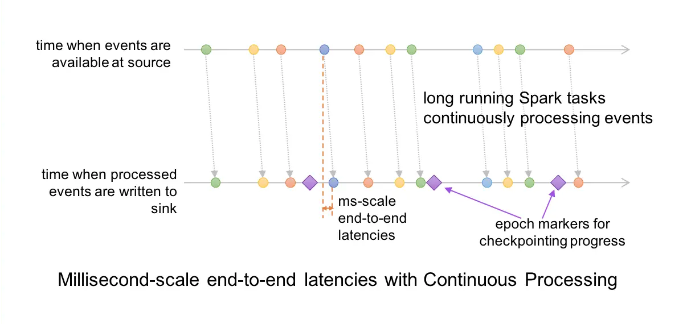

Structured Streaming
Structured Streaming provides fast, scalable, fault-tolerant, end-to-end exactly-once stream processing without the user having to reason about streaming.
介绍
一次性语义保证：
- checkpoint 和 write-ahead logs
执行引擎：
- micro-batch processing（默认），100ms的延迟，exactly once语义；
- continous processing，1ms的延迟，as-least once语义；
示例
readStream：流式读取
writeStream：流式写出
- start：启动流式数据
import org.apache.spark.sql.functions._
import org.apache.spark.sql.SparkSession
val spark = SparkSession
.builder
.appName("StructuredNetworkWordCount")
.getOrCreate()
import spark.implicits._
// Create DataFrame representing the stream of input lines from connection to localhost:9999
val lines = spark.readStream
.format("socket")
.option("host", "localhost")
.option("port", 9999)
.load()
// Split the lines into words
val words = lines.as[String].flatMap(_.split(" "))
// Generate running word count
val wordCounts = words.groupBy("value").count()
// Start running the query that prints the running counts to the console
val query = wordCounts.writeStream
.outputMode("complete")
.format("console")
.start()
query.awaitTermination()
发送端：
接收端：
$ ./bin/run-example org.apache.spark.examples.sql.streaming.StructuredNetworkWordCount localhost 9999
-------------------------------------------
Batch: 0
-------------------------------------------
+------+-----+
| value|count|
+------+-----+
|apache| 1|
| spark| 1|
+------+-----+
-------------------------------------------
Batch: 1
-------------------------------------------
+------+-----+
| value|count|
+------+-----+
|apache| 2|
| spark| 1|
|hadoop| 1|
+------+-----+
编程模型
基本概念
流上的新数据像表上的新的一行：

对输入的查询将生成“结果表”。每触发一次（比如说，每1秒），就会向输入表追加新行，最终更新结果表：

输出数据的模式：
完全模式：整个更新后的“结果表”写到外部存储，由外部存储引擎决定怎么处理写整张表；追加模式：上次触发写入后的“结果表“中追加的新的数据写到外部存储- 适用于”结果表“中已经存在的数据不会更新的情况；
更新模式：上次触发写入后的“结果表“中更新的数据写到外部存储- 如果没有聚合操作，等价于
完全模式；
以WordCount为例，阐明完全模式是数据写出的情况：

Note：
- 结构化流式处理不会具体化整个表。它从流数据源读取最新的可用数据，增量处理以更新结果，然后丢弃源数据。
- 它只保留更新结果所需的最小中间状态数据（例如，前面示例中的中间计数）。
事件时间和延迟数据
- 支持事件时间，嵌入到数据本身中的时间，例如物联网等等包含发生时间的数据；
- watermarking：处理比预期晚到达的数据；
容错
提供端到端的仅一次性（Exactly Once）语义，通过设计Source、Sink和执行引擎，可靠地跟踪处理的确切进度，从而使其能够通过重新启动和/或重新处理来处理任何类型的故障。
- Replayable source：假设具有offsets，如Kafka，文件偏移量等；
- Engine：checkpoint 和 write-ahead logs，记录每次触发时处理的数据的偏移量；
- Idempotent sink：假设具有幂等性，可以多次处理重复的数据；
API
Input Source
内置的数据源
- File：读取目录下的文件，以文件更改的时间为顺序：
- 支持容错，Replayable；
- 文件格式：text, CSV, JSON, ORC, Parquet；
- 文件的添加需要原子性，如HDFS的mv操作；
- Kafka：支持Kafka 0.10.0 以上版本
- 支持容错，Replayable；
- Socket Source（for testing）和 Rate Source（for testing）
类型推导和分区数
默认需要手动执行schema，可以通过设置spark.sql.streaming.schemaInference为true自动推导。
支持分区的数据读取，即目录名为/key=value/。
操作算子
基本操作-选择、映射、聚合
DataFrame的算子操作
case class DeviceData(device: String, deviceType: String, signal: Double, time: DateTime)
val df: DataFrame = ... // streaming DataFrame with IOT device data with schema { device: string, deviceType: string, signal: double, time: string }
val ds: Dataset[DeviceData] = df.as[DeviceData] // streaming Dataset with IOT device data
// Select the devices which have signal more than 10
df.select("device").where("signal > 10") // using untyped APIs
ds.filter(_.signal > 10).map(_.device) // using typed APIs
// Running count of the number of updates for each device type
df.groupBy("deviceType").count() // using untyped API
// Running average signal for each device type
import org.apache.spark.sql.expressions.scalalang.typed
ds.groupByKey(_.deviceType).agg(typed.avg(_.signal)) // using typed API
注册成临时表，使用SQL操作
df.createOrReplaceTempView("updates")
spark.sql("select count(*) from updates") // returns another streaming DF
窗口操作（TODO）
处理延迟数据和水位
Join操作
流-批join
流-流join
Inner Joins with optional Watermarking
Outer Joins with Watermarking
Semi Joins with Watermarking
Support matrix for joins in streaming queries
流去重（TODO）
多水位处理策略（TODO）
任意的状态操作
很多场景需要除了聚合之外的状态操作。
mapGroupsWithState和flatMapGroupsWithState算子：
不支持的操作
- 链式聚合；
- limit和take；
- distinct；
- Sort操作只允许在
完全模式的聚合后； - join中的相关限制；
Limitation of global watermark（TODO）
开始流式查询
输出模式
完全模式：整个更新后的“结果表”写到外部存储，适合聚合表；追加模式：上次触发写入后的“结果表“中追加的新的数据写到外部存储- 适用于”结果表“中已经存在的数据不会更新的情况；
更新模式：上次触发写入后的“结果表“中更新的数据写到外部存储- 如果没有聚合操作，等价于
完全模式；
| Query Type | Supported Output Modes | Notes | |
|---|---|---|---|
| Queries with aggregation | Aggregation on event-time with watermark | Append, Update, Complete | Append mode uses watermark to drop old aggregation state. But the output of a windowed aggregation is delayed the late threshold specified in withWatermark() as by the modes semantics, rows can be added to the Result Table only once after they are finalized (i.e. after watermark is crossed). See the Late Data section for more details. Update mode uses watermark to drop old aggregation state. Complete mode does not drop old aggregation state since by definition this mode preserves all data in the Result Table. |
| Other aggregations | Complete, Update | Since no watermark is defined (only defined in other category), old aggregation state is not dropped. Append mode is not supported as aggregates can update thus violating the semantics of this mode. | |
Queries with mapGroupsWithState |
Update | Aggregations not allowed in a query with mapGroupsWithState. |
|
Queries with flatMapGroupsWithState |
Append operation mode | Append | Aggregations are allowed after flatMapGroupsWithState. |
| Update operation mode | Update | Aggregations not allowed in a query with flatMapGroupsWithState. |
|
Queries with joins |
Append | Update and Complete mode not supported yet. See the support matrix in the Join Operations section for more details on what types of joins are supported. | |
| Other queries | Append, Update | Complete mode not supported as it is infeasible to keep all unaggregated data in the Result Table. |
Sink
- File sink - Stores the output to a directory.
- Kafka sink - Stores the output to one or more topics in Kafka.
- Foreach sink - Runs arbitrary computation on the records in the output. See later in the section for more details.
- Console sink (for debugging) - Prints the output to the console/stdout every time there is a trigger. Both, Append and Complete output modes, are supported.
- Memory sink (for debugging) - The output is stored in memory as an in-memory table. Both, Append and Complete output modes, are supported.
| Sink | Supported Output Modes | Options | Fault-tolerant | Notes |
|---|---|---|---|---|
| File Sink | Append | path: path to the output directory, must be specified. retention: time to live (TTL) for output files. Output files which batches were committed older than TTL will be eventually excluded in metadata log. This means reader queries which read the sink's output directory may not process them. You can provide the value as string format of the time. (like "12h", "7d", etc.) By default it's disabled. For file-format-specific options, see the related methods in DataFrameWriter (Scala/Java/Python/R). E.g. for "parquet" format options see DataFrameWriter.parquet() |
Yes (exactly-once) | Supports writes to partitioned tables. Partitioning by time may be useful. |
| Kafka Sink | Append, Update, Complete | See the Kafka Integration Guide | Yes (at-least-once) | |
| Foreach Sink | Append, Update, Complete | None | Yes (at-least-once) | More details in the next section |
| ForeachBatch Sink | Append, Update, Complete | None | Depends on the implementation | More details in the next section |
| Console Sink | Append, Update, Complete | numRows: Number of rows to print every trigger (default: 20) truncate: Whether to truncate the output if too long (default: true) |
No | |
| Memory Sink | Append, Complete | None | No. But in Complete Mode, restarted query will recreate the full table. | Table name is the query n |
ForeachBatch
Note:
foreachBatch默认只提供 at-least-once write保证，但是可以使用batchId作为输出的去重，获取一次性语义。foreachBatch不能在continuous processing模式（使用foreach）下使用。
streamingDF.writeStream.foreachBatch { (batchDF: DataFrame, batchId: Long) =>
batchDF.persist()
batchDF.write.format(...).save(...) // location 1
batchDF.write.format(...).save(...) // location 2
batchDF.unpersist()
}
Foreach
Note: Spark does not guarantee same output for (partitionId, epochId), so deduplication cannot be achieved with (partitionId, epochId).
实现ForeachWrite类
streamingDatasetOfString.writeStream.foreach(
new ForeachWriter[String] {
def open(partitionId: Long, version: Long): Boolean = {
// Open connection
}
def process(record: String): Unit = {
// Write string to connection
}
def close(errorOrNull: Throwable): Unit = {
// Close the connection
}
}
).start()
启动流程：
- For each partition with partition_id:
- For each batch/epoch of streaming data with epoch_id:
- Method open(partitionId, epochId) is called.
- If open(…) returns true, for each row in the partition and batch/epoch, method process(row) is called.
- Method close(error) is called with error (if any) seen while processing rows.
流式Table API
DataStreamWriter.toTable() 将流式的DataFrame写作为表；
DataStreamReader.table()读表作为DataFrame。
val spark: SparkSession = ...
// Create a streaming DataFrame
val df = spark.readStream
.format("rate")
.option("rowsPerSecond", 10)
.load()
// Write the streaming DataFrame to a table
df.writeStream
.option("checkpointLocation", "path/to/checkpoint/dir")
.toTable("myTable")
// Check the table result
spark.read.table("myTable").show()
// Transform the source dataset and write to a new table
spark.readStream
.table("myTable")
.select("value")
.writeStream
.option("checkpointLocation", "path/to/checkpoint/dir")
.format("parquet")
.toTable("newTable")
// Check the new table result
spark.read.table("newTable").show()
触发器
| Trigger Type | Description |
|---|---|
| unspecified (default) | 默认是微批处理模式，只要前面微批处理完，生成新的微批数据。 |
| Fixed interval micro-batches | 微批模式： 1. 如果在间隔时间内处理完微批数据，则等待到下一个间隔时间，生成微批数据并处理； 2. 如果间隔时间内未处理完，则在前面数据处理完后，立即产生新的微批数据处理，不等到下一个间隔时间； 3. 如果没有新数据可用，则不会启动微批处理。 |
| One-time micro-batch | 查询将只执行一个微批处理来处理所有可用数据，然后自行停止。这在希望定期启动集群、处理自上一个周期以来可用的所有内容，然后关闭集群的场景中非常有用。在某些情况下，这可能会大大节省成本。 |
| Continuous with fixed checkpoint interval (experimental) | The query will be executed in the new low-latency, continuous processing mode. |
示例
import org.apache.spark.sql.streaming.Trigger
// Default trigger (runs micro-batch as soon as it can)
df.writeStream
.format("console")
.start()
// ProcessingTime trigger with two-seconds micro-batch interval
df.writeStream
.format("console")
.trigger(Trigger.ProcessingTime("2 seconds"))
.start()
// One-time trigger
df.writeStream
.format("console")
.trigger(Trigger.Once())
.start()
// Continuous trigger with one-second checkpointing interval
df.writeStream
.format("console")
.trigger(Trigger.Continuous("1 second"))
.start()
管理流式查询
start()返回的Query，基本的API：
val query = df.writeStream.format("console").start() // get the query object
query.id // get the unique identifier of the running query that persists across restarts from checkpoint data
query.runId // get the unique id of this run of the query, which will be generated at every start/restart
query.name // get the name of the auto-generated or user-specified name
query.explain() // print detailed explanations of the query
query.stop() // stop the query
query.awaitTermination() // block until query is terminated, with stop() or with error
query.exception // the exception if the query has been terminated with error
query.recentProgress // an array of the most recent progress updates for this query
query.lastProgress // the most recent progress update of this streaming query
可以在一个SparkSession中启动多个query，查询并发执行，共用集群资源
sparkSession.streams() 获取 StreamingQueryManager
val spark: SparkSession = ...
spark.streams.active // get the list of currently active streaming queries
spark.streams.get(id) // get a query object by its unique id
spark.streams.awaitAnyTermination() // block until any one of them terminates
监控流式查询（TODO）
交互式读取指标
异步API报告指标
使用DropWizards汇报指标
通过checkpointing容错
如果出现故障或故意关闭，可以恢复以前查询的进度和状态，并在停止的位置继续读取。
可以使用检查点位置配置查询，该查询将所有进度信息（即每个触发器中处理的偏移量范围）和正在运行的聚合（例如，快速示例中的字数）保存到检查点位置。
此检查点位置必须是HDFS兼容文件系统中的路径，并且可以在启动查询时在DataStreamWriter中设置为选项。
aggDF
.writeStream
.outputMode("complete")
.option("checkpointLocation", "path/to/HDFS/dir")
.format("memory")
.start()
详细原理见容错
流式查询改变时的恢复语义（TODO）
在从同一检查点位置重新启动时，允许在流查询中进行哪些更改存在限制。以下是一些不允许的更改，或者更改的效果没有得到很好的定义：
Continuous Processing [Experimental]
只能提供 at-least-once 语义。
原理
如下图所示：epoch 是 input 中数据被发送给 operator 处理的最小单位，在处理过程中，epoch 的 offset 会被记录到 wal 中。另外 continuous 模式下的 snapshot 存储使用的一致性算法是 Chandy-Lamport 算法。

跟微批模式的对比
与 micro-batch 模式缺点和优点都很明显。
- 缺点是不容易做扩展
- 优点是延迟更低

